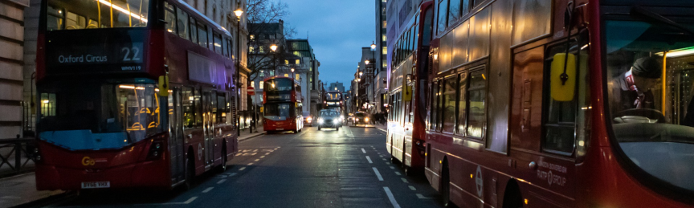

Major Traffic Accidents Analysis
This project is an analysis of the traffic accidents in 2020 in UK, based on the database provided by the department for transport. It is created in Python, with Jupyter Notebooks. The dataset includes 91,199 total accidents, out of which 202 were major accidents (0.22%).
You can find the Jupyter notebook in the git repository, here.
Now let's go through few of the insights.
What is a major accident?
A major accident is a fatal accident involving 3+ casualties . Throught this analysis we are trying to identify the characteristics of major accidents. The insights could be used to brainstorm interventions that could lower the number of deaths.
When would you be at highest risk to be involved in a major accident?
Short answer: Saturday after dark (evening / late evening), in a rural area with 60 km speed limit, and in wet/damp conditions. But let's dive into more detail.
What time of day and day of week do most major accidents happen?
The day of the week when most major accidents happen is Saturday. While for the total accidents we can see a progression throughout the week (an increasing number of accidents from Monday-Friday, with a drop at the beginning of the weekend), the major accidents don't follow an obvious pattern. Saturday stands out as the day with the most major accidents.Looking at the hour, we can see that major accidents happen mostly during evening and late evening hours.
On the other hand, all the accidents counted together (major + non-major) follow a curve. When we look at the number of accidents per hour, we can distinguish 2 peaks - the highest one during the afternoon "rush hour" around 3 pm-6 pm and a smaller one during the morning "rush hour" (8 am).
A 2017 bbc article mentions that the Department of Transport classed the rush hours in England as between 6-9 am and 4-7 pm on weekdays, which mostly aligns with our plot by hourly intervals.

Here is a more detailed look at major accidents, grouped by day and hour:
And a comparison with the nice curves followed by all accidents (major and non-major):
What characteristics stand out in major incidents compared with other accidents?
I performed a Chi-Square Test of independence to see if there is a statistically significant association between the occurence of a major vs other accident and various conditions present at the time of the accident. The chi-square test is based on a test statistic that measures the divergence of the observed data from the values that would be expected under the null hypothesis of no association (if everything happened by chance - even if two variables are independent in the population, samples will vary due to random sampling variation).
The factors that stand out in major accidents, while also being stastistically significant are:
- light conditions: approx 40% of major accidents occur in conditions of darkness (no lighting and lights lit), as opposed to only approx 25% of non-major accidents
- road surface conditions: more than 40% major accidents occur on wet/damp roads, as opposed to under 30% of other accidents
- urban vs rural area: close to 80% of major accidents occur in rural areas, as opposed to under 30% of other accidents
- junction detail: approx 70% of major accidents occur not at junction or within 20 meters, as opposed to approx 40% of other accidents
- pedestrian crossing: more than 90% of major accidents occur in areas with no physical crossing within 50 meters, as opposed to under 80% of other accidents
- speed limit: close to 50% of major accidents occur in areas with 60 km speed limit, while the majority of other accidents occur in areas with 30 km speed limit. Speed limit is also highly correlated with urban/rural area
For extra insights, charts and the Python code for the analysis, visit the Jupyter Notebook inside the GitHub repository, here.
This analysis was inspired by a Datacamp competition.